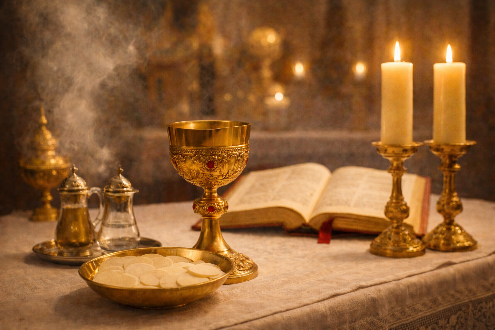

O Significado dos Símbolos na Missa Católica: Entenda a Liturgia
A Santa Missa é o centro da vida cristã, o sacrifício incruento de Cristo que se renova em nossos altares. No entanto, para muitos, a liturgia pode parecer uma sucessão de gestos e objetos misteriosos. A Igreja Católica utiliza uma linguagem simbólica riquíssima para nos ajudar a entrar no mistério de Deus. Como dizia Santo Agostinho, "o símbolo é um sinal visível de uma realidade invisível".
A Água e o Vinho: Divindade e Humanidade
Um dos momentos mais discretos e profundos da Missa ocorre durante o Ofertório, quando o sacerdote coloca uma gota de água no cálice com vinho. Este gesto simboliza a união da nossa humanidade (a água) com a divindade de Cristo (o vinho). Assim como a água se perde no vinho, somos chamados a nos perder no amor de Deus.
"Pelo mistério desta água e deste vinho, possamos participar da divindade daquele que se dignou assumir a nossa humanidade." (Oração do Sacerdote no Ofertório)
O Incenso: A Oração que Sobe ao Céu
O uso do incenso na liturgia remonta ao Antigo Testamento e simboliza a oração dos fiéis que se eleva a Deus. A fumaça perfumada que sobe é um sinal visual da nossa adoração e do respeito sagrado pelo altar, pelas ofertas, pelo sacerdote e pelo povo de Deus, que é o templo vivo do Espírito Santo.
As Cores Litúrgicas: O Ritmo da Salvação
As cores das vestes do sacerdote e dos paramentos do altar não são escolhidas ao acaso. Elas refletem o tempo litúrgico e o sentimento da Igreja em cada celebração:
- Branco: Simboliza a alegria, a pureza e a ressurreição. Usado no Natal, Páscoa e festas de santos não mártires.
- Verde: Simboliza a esperança e o crescimento. Usado no Tempo Comum.
- Roxo: Simboliza a penitência, a conversão e a espera. Usado no Advento, Quaresma e missas de defuntos.
- Vermelho: Simboliza o fogo do Espírito Santo e o sangue do martírio. Usado no Domingo de Ramos, Sexta-feira Santa, Pentecostes e festas de mártires.
O Altar: O Centro do Sacrifício
O altar não é apenas uma mesa, mas o símbolo do próprio Cristo. Por isso, o sacerdote o beija no início e no fim da celebração. Ele representa o Calvário, onde o sacrifício de Jesus aconteceu, e a mesa da Última Ceia, onde Ele instituiu a Eucaristia. Tudo na igreja converge para o altar.
A Luz das Velas: Cristo, a Luz do Mundo
As velas acesas no altar lembram que Cristo é a luz que ilumina as trevas do mundo. Elas também simbolizam a nossa fé que deve estar sempre acesa e o sacrifício, pois a vela se consome para iluminar, assim como Cristo se consumiu por nós e nós devemos nos consumir no serviço a Deus.
Conclusão: Participar com Consciência
Compreender os símbolos da Missa transforma a nossa participação. Deixamos de ser espectadores para nos tornarmos verdadeiros adoradores. Cada gesto, cada cor e cada objeto tem uma voz que nos fala do amor infinito de Deus. Na próxima vez que você for à Missa, observe esses sinais e deixe que eles conduzam seu coração para mais perto do Senhor.
Que a liturgia seja para você não um rito vazio, mas um encontro vivo e transformador com o Deus que se faz presente entre nós.